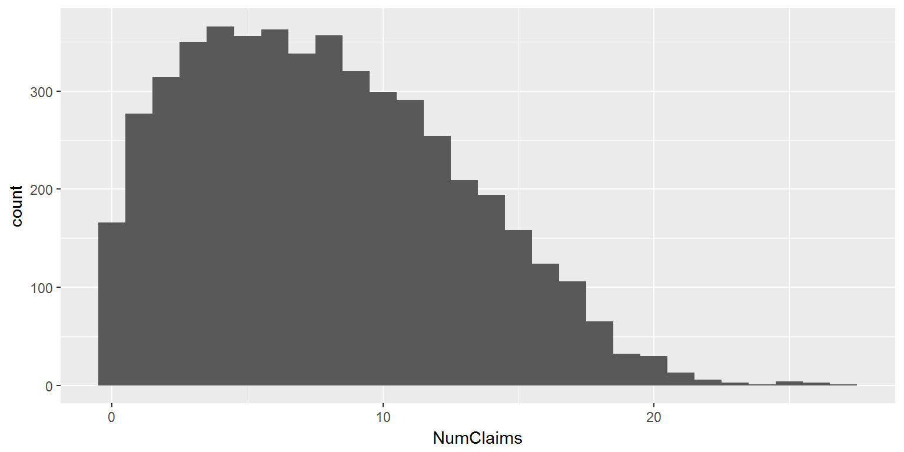
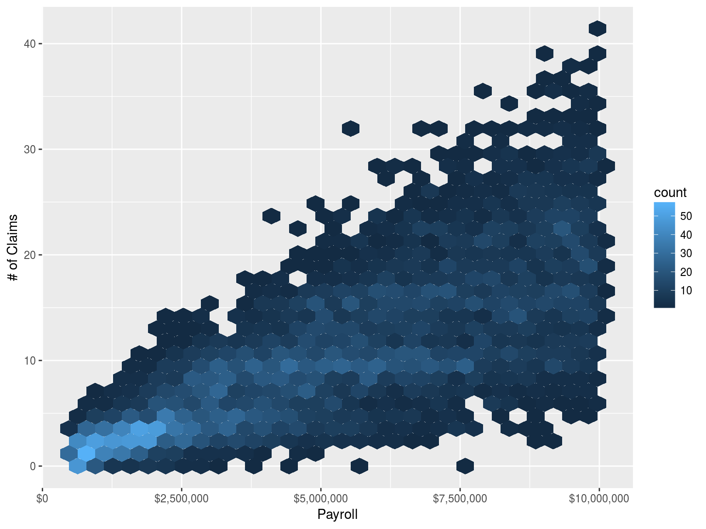
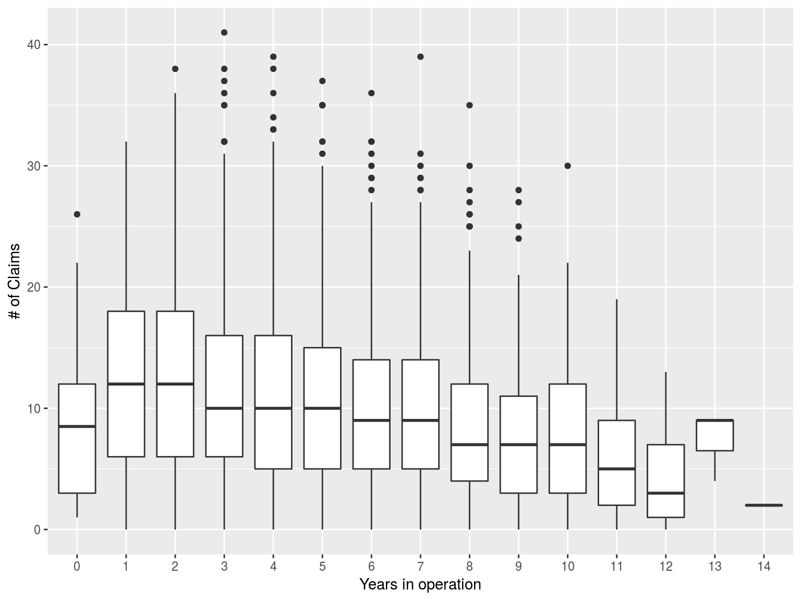
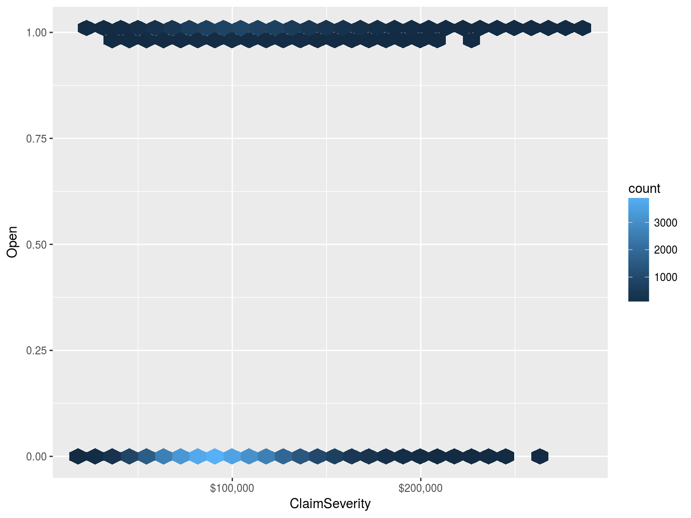
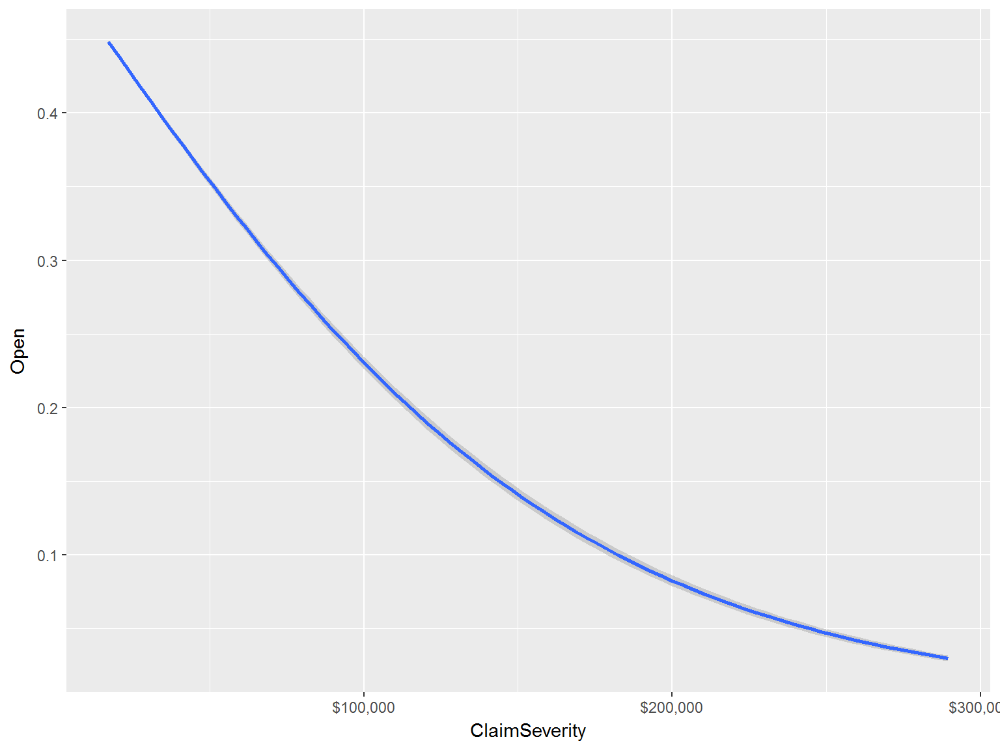
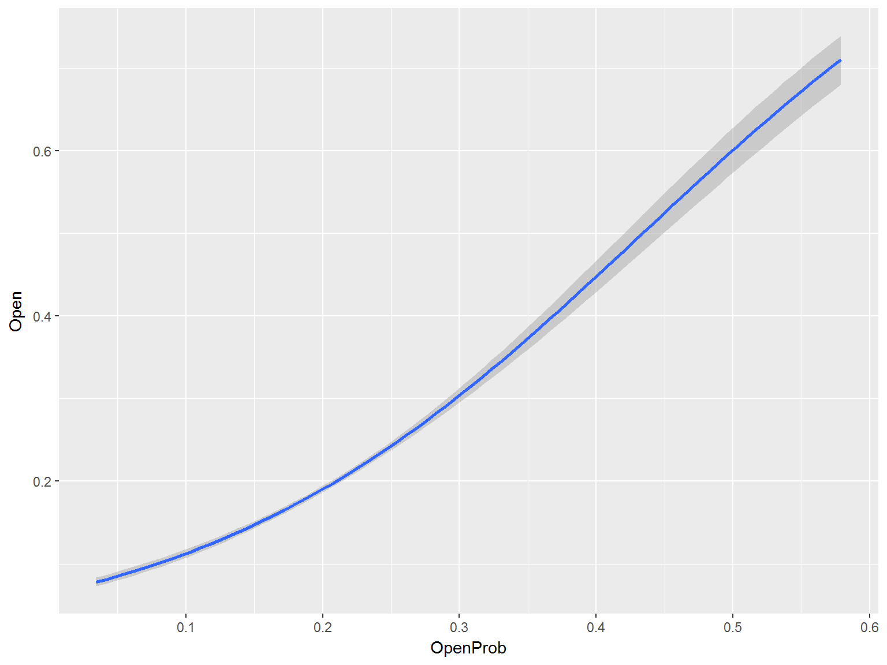

Claim counts for 5,000 policies.



But how do we do that? If only we had a linear model that was a bit more general …
Warning: I play fast and loose with the difference between the response variable and the error term.
\(E[y]=g^{-1}(\beta_0+\sum_{j=1}^p\beta_{ij})\)
\(g(x)\) is the “link” function.
The linear combination is often referred to by \(\eta\). I don’t know why it doesn’t get a name.
I also don’t know why the expectation is equal to the inverse of the link function. If talking about the transformed expectation doesn’t make your head hurt, then you may like this formula better.
\(g(E[y])=\beta_0+\sum_{j=1}^p\beta_{ij}\)
Must be one of the exponential family of functions.
\(f(y; \theta,\phi) = exp[\frac{y\theta - b(\theta) }{a(\phi)} + c(y,\phi)]\)
Note this doesn’t include the lognormal. That’s OK; we can always perform a log transform of our data and fit a normal.
Lots of folks get very excited about this formula. I don’t. I can never remember it and I never feel as though I need to. If you like this formula, you’ll see it often, but you won’t see it any more today.
| Distribution | Link | |
|---|---|---|
| binomical | logit | \(g(x)=\frac{exp(x)}{1+exp(x)}\) |
| gaussian | identity | \(g(x)=x\) |
| poisson | log | \(g(x)=ln(x)\) |
| Gamma | inverse | \(g(x)=1/x\) |
A linear model:
fit_lm <- lm(NumClaims ~ Payroll, data = dfGLM)A GLM:
fit_glm <- glm(NumClaims ~ Payroll, data = dfGLM, family = "poisson")The offset is a kind of scaling factor that should not be included as a predictor. Comparable to the notion of exposure in insurance pricing.
fit_1 <- glm(NumClaims ~ 1 + Payroll, data = dfGLM, family="poisson")
fit_2 <- glm(NumClaims ~ 1, data = dfGLM, family="poisson", offset=log(Payroll))
fit_1$aic
## [1] 24074.27
fit_2$aic
## [1] 23139.99
coef(fit_1)
## (Intercept) Payroll
## 8.662942e-01 1.998568e-07
coef(fit_2)
## (Intercept)
## -13.4123Fit for the second model is much better, because payroll isn’t really a predictor of loss. It is a scaling element for exposure. Think the number of deaths by heart disease in Manhattan vs. number of deaths by heart disease in a rural town.



##
## Call:
## glm(formula = Open ~ 0 + ClaimSeverity, family = "binomial",
## data = dfBinomial)
##
## Deviance Residuals:
## Min 1Q Median 3Q Max
## -1.0906 -0.8029 -0.7089 -0.5601 2.6528
##
## Coefficients:
## Estimate Std. Error z value Pr(>|z|)
## ClaimSeverity -1.205e-05 1.220e-07 -98.81 <2e-16 ***
## ---
## Signif. codes: 0 '***' 0.001 '**' 0.01 '*' 0.05 '.' 0.1 ' ' 1
##
## (Dispersion parameter for binomial family taken to be 1)
##
## Null deviance: 54603 on 39388 degrees of freedom
## Residual deviance: 42270 on 39387 degrees of freedom
## AIC: 42272
##
## Number of Fisher Scoring iterations: 4##
## Call:
## glm(formula = Open ~ 1 + ClaimSeverity, family = "binomial",
## data = dfBinomial)
##
## Deviance Residuals:
## Min 1Q Median 3Q Max
## -1.4136 -0.6872 -0.5984 -0.5059 2.2119
##
## Coefficients:
## Estimate Std. Error z value Pr(>|z|)
## (Intercept) -2.683e+00 4.400e-02 -60.98 <2e-16 ***
## ClaimSeverity 1.237e-05 3.937e-07 31.41 <2e-16 ***
## ---
## Signif. codes: 0 '***' 0.001 '**' 0.01 '*' 0.05 '.' 0.1 ' ' 1
##
## (Dispersion parameter for binomial family taken to be 1)
##
## Null deviance: 39125 on 39387 degrees of freedom
## Residual deviance: 38133 on 39386 degrees of freedom
## AIC: 38137
##
## Number of Fisher Scoring iterations: 4##
## Call:
## glm(formula = Open ~ 0 + ClaimSeverity, family = binomial(link = "identity"),
## data = dfBinomial)
##
## Deviance Residuals:
## Min 1Q Median 3Q Max
## -1.2036 -0.7003 -0.6075 -0.4842 2.4287
##
## Coefficients:
## Estimate Std. Error z value Pr(>|z|)
## ClaimSeverity 1.978e-06 1.976e-08 100.1 <2e-16 ***
## ---
## Signif. codes: 0 '***' 0.001 '**' 0.01 '*' 0.05 '.' 0.1 ' ' 1
##
## (Dispersion parameter for binomial family taken to be 1)
##
## Null deviance: Inf on 39388 degrees of freedom
## Residual deviance: 38121 on 39387 degrees of freedom
## AIC: 38123
##
## Number of Fisher Scoring iterations: 3##
## Call:
## glm(formula = Open ~ 1 + ClaimSeverity, family = binomial(link = "identity"),
## data = dfBinomial)
##
## Deviance Residuals:
## Min 1Q Median 3Q Max
## -1.2133 -0.7008 -0.6063 -0.4803 2.4504
##
## Coefficients:
## Estimate Std. Error z value Pr(>|z|)
## (Intercept) -3.641e-03 6.035e-03 -0.603 0.546
## ClaimSeverity 2.013e-06 6.220e-08 32.366 <2e-16 ***
## ---
## Signif. codes: 0 '***' 0.001 '**' 0.01 '*' 0.05 '.' 0.1 ' ' 1
##
## (Dispersion parameter for binomial family taken to be 1)
##
## Null deviance: 39125 on 39387 degrees of freedom
## Residual deviance: 38121 on 39386 degrees of freedom
## AIC: 38125
##
## Number of Fisher Scoring iterations: 3Gelman, Andrew, and Jennifer Hill. 2006. Data Analysis Using Regression and Multilevel/Hierarchical Models. http://www.stat.columbia.edu/~gelman/arm/.